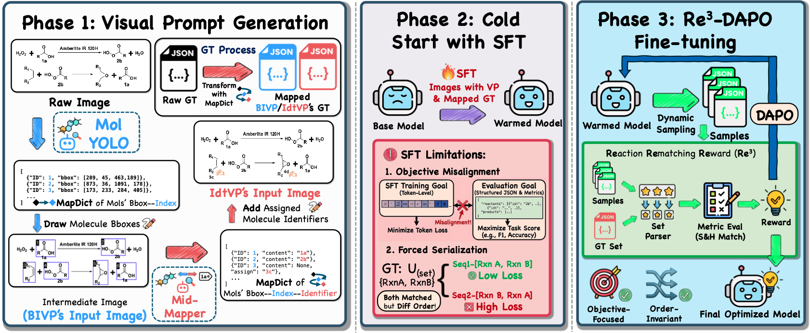
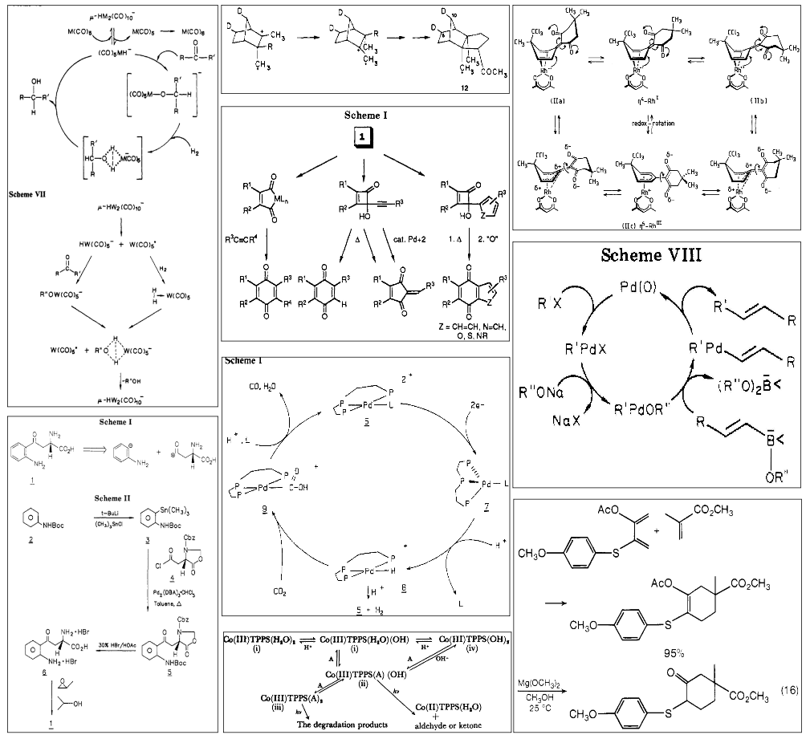
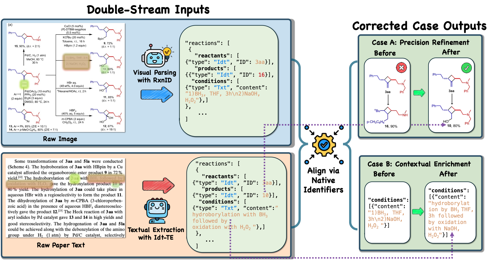

Reaction diagram parsing (RxnDP) is critical for extracting chemical synthesis information from literature. Although recent Vision-Language Models (VLMs) have emerged as a promising paradigm to automate this complex visual reasoning task, their application is fundamentally bottlenecked by the inability to align visual chemical entities with pre-trained knowledge, alongside the inherent discrepancy between token-level training and reaction-level evaluation.
To address these dual challenges, this work enhances VLM-based RxnDP from two complementary perspectives. First, we propose Identifier as Visual Prompting (IdtVP), which leverages naturally occurring molecule identifiers to activate the chemical knowledge acquired during VLM pre-training, enabling powerful zero-shot and out-of-distribution capabilities.
Second, we introduce Re3-DAPO, a reinforcement learning algorithm that leverages verifiable rewards to directly optimize reaction-level metrics, thereby achieving consistent gains over standard supervised fine-tuning by eliminating forced serialization noise.
Additionally, we release the ScannedRxn benchmark, comprising scanned historical reaction diagrams with real-world artifacts, to rigorously assess model robustness. Our contributions advance the accuracy and generalization of VLM-based reaction diagram parsing.
Standard Supervised Fine-Tuning (SFT) relies on token-level teacher-forcing, compelling the network to memorize arbitrary JSON serializations rather than genuine chemical semantics. This forced ordering creates significant objective misalignment for the inherently order-agnostic RxnDP task.

To overcome this, we designed a progressive three-stage pipeline. Following Visual Prompt Generation and a Cold Start with SFT, we introduce the Re3-DAPO fine-tuning strategy. By shifting the learning objective from next-token prediction to set-level matching (translating evaluation metrics like Hybrid Match and Soft Match into dense reward signals), Re3-DAPO allows the model to explore valid JSON serializations anchored solely by an order-invariant semantic objective.

Existing RxnDP benchmarks are primarily derived from contemporary, born-digital literature. To evaluate true cross-era generalization, we introduce the ScannedRxn dataset. Comprising 200 historically significant reaction diagrams spanning the 1950s to the 1990s, this benchmark features severe scanning noise, typewriter fonts, and non-standard legacy layouts, posing distinct challenges to modern end-to-end parsing models.

Unlike arbitrary bounding box indices, IdtVP establishes a robust semantic bridge between vision and language by adopting the author's native identifiers. We exploit this shared vocabulary through the Idt-TE (Identifier-based Textual Extraction) pipeline. This double-stream architecture aligns LLM-extracted textual data with visual predictions seamlessly, enabling powerful downstream applications such as Precision Refinement (resolving visual ambiguities using textual context) and Contextual Enrichment (completing visual graphs with hidden attributes).
Extensive experiments confirm that the IdtVP strategy paired with Re3-DAPO optimization dramatically outperforms existing methodologies. Below is the performance summary across RxnScribe-test, RxnCaption-15k-test, and the historical ScannedRxn benchmarks.
| Model | Strategy | RxnScribe-test | RxnCaption-15k-test | ScannedRxn | |||
|---|---|---|---|---|---|---|---|
| Hybrid-F1 | Soft-F1 | Hybrid-F1 | Soft-F1 | Hybrid-F1 | Soft-F1 | ||
| Trained Models | |||||||
| RxnID+RL (Ours) | IdtVP | 75.0 | 85.9 | 64.4 | 74.5 | 56.3 | 76.2 |
| RxnID (Ours) | IdtVP | 74.6 | 85.6 | 61.2 | 72.8 | 54.5 | 74.4 |
| RxnCaption+RL | BIVP | 75.9 | 86.9 | 64.1 | 73.6 | 45.1 | 59.2 |
| RxnCaption | BIVP | 72.2 | 86.2 | 59.8 | 70.4 | 51.0 | 69.5 |
| RxnScribe_w/15k | BROS | 70.7 | 82.8 | 47.4 | 55.2 | 50.5 | 65.9 |
| RxnIM | BROS | 40.5 | 22.8 | 37.4 | 70.5 | 30.3 | 31.6 |
| Zero-Shot (Closed-source Models) | |||||||
| Gemini 3.0 Pro | IdtVP | 71.7 | 88.1 | 58.3 | 78.2 | 50.3 | 83.9 |
| GPT-4o | IdtVP | 29.9 | 22.1 | 16.0 | 37.7 | 18.3 | 58.2 |
@article{song2026molecular,
title={Molecular Identifier Visual Prompt and Verifiable Reinforcement Learning for Chemical Reaction Diagram Parsing},
author={Song, Jiahe and Wang, Chuang and Wang, Yinfan and Zheng, Hao and Nie, Rui and Jiang, Bowen and Wei, Xingjian and Gao, Junyuan and Wang, Yubin and Wang, Bin and Wu, Lijun and Wu, Jiang and Yu, Qian and He, Conghui},
journal={arXiv preprint},
year={2026}
}